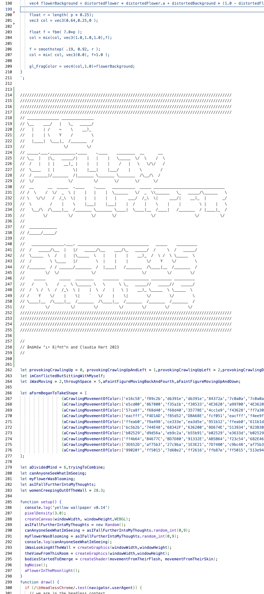

Our work is inspired by a short story by Charlotte Perkins Gilman written in 1892, The Yellow Wallpaper. The narrator of her story is another imaginative woman, a writer of short fiction. Her husband is John, a rational man and a very scientific medical doctor. John feels that his wife is too agitated, so he enforces upon her a treatment contrived for unusual women in the age of Freud: complete rest, no guests, no visitors. Retired to the country by her doting husband, our narrator takes her rest in a room hung with yellow wallpaper, staring alone at the walls for three months. By the end of this cure, she has completely lost her mind, hallucinating a mad woman imprisoned behind the yellow patterns. My interpretation of the Gilman story is called Systems Madness, a coded system translating her yellow wallpaper into P5js. To accomplish this I invited Andrew Blanton, a composer and accomplished programmer to collaborate.
To decode the semantics of crazy wallpaper, I decided to use Dall-e, the open-access AI that creates images from text. Since I was working from literature, I could harness Dall-e to translate literary language into a library of visual tropes. The Dall-e database consists of reproductions of canonical images culled from the history of mainstream art history, in other words, of western painting, photography, and design. Dall-e, in the end, is a cultural archive, simulating cultural values, cliches and assumptions. It is at its core, a semiotics engine. Dall-e is therefore the perfect tool for deconstructing crazy wallpaper. I realized that Dalle-e because it sits on a specific cultural database, hooks into its unconscious, providing the road to travel in pursuit of the Yellow Wallpaper algorithm - the mathematics behind a story that is a literary icon of both Romantic and feminist fiction.
I typed descriptors into Dall-e, borrowing language from the short story, also intermixed with other related literary, cultural, and art references from the same period: “Hallucinatory old floral wallpaper like a watercolor Rorschach test created by Victor Hugo after writing The Hunchback of Notre Dame, then seeing an exhibition of paintings by Odilon Redon,” for example. And also: “Tiny flowers in patterned wallpaper, water-colored, faded and painted by a paranoid schizophrenic woman seeing visions of dancing macabre figures.” I tried many versions, then at a certain point, the Dall-e wallpaper designs started repeating themselves. Once they did, I knew I had cracked the code. It was time for Andrew to step in.
To script, Andrew countered my Dall-e semiotics engine with a postprocessing library that he translated into a custom shader that bends and distorts 5 poisonous flowers. Andrew and I then formally deconstructed the pattern language of Dall-e Romantic wallpapers with as much precision as we could muster. “Crazy” patterns consist of warm, off-primary colors, noises, gradients, transparencies, blurrings, layerings imitating watermarks, and different fractal formations repeated irregularly. Andrew then used his library to translate the Dall-e wallpaper language into code. He created a system to reconstruct madness that is also responsive to human touch - a slight wiggle to a handheld mouse resets it to a different time and place. The Yellow Wallpaper inspired rational mathematics, yet suggesting irrational hallucinations. Together, Andrew and I framed a question - what happens when reason meets unreason? The response: the all too human desire to create order out of the chaos of this world; and identically - the truth - that too much order can actually drive you mad!
The production of this work also drove ME a bit mad. It was a stretch. For the past 35 years, my practice has been intermedia and installation based. I translated my photo, video, and painting practice into virtual realities over twenty years ago, using physical objects produced by computer-driven production machines, projections, and mapped 3D animations, followed by AR and VR as they were invented. What Artblocks and Andrew have taught me, is how to modularize a system from the ground up. This means building it organically from concept to code, from code to image, and then from image to form. With these building blocks, I can create a world that expresses meaning as a story, but also as a data dynamic stream that can translate once again into an image - the most potent form of emotional expression. This is an incredible breakthrough for me, allowing me to use all of the tools and skills I’ve honed since I was in my twenties - having arrived at the grand old age of almost 68! Thank you amazing team and community: <3.
